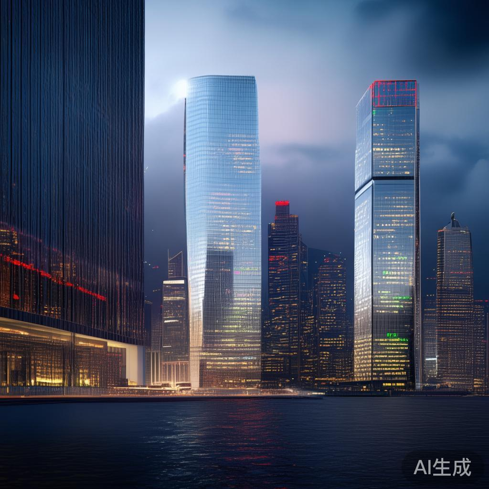
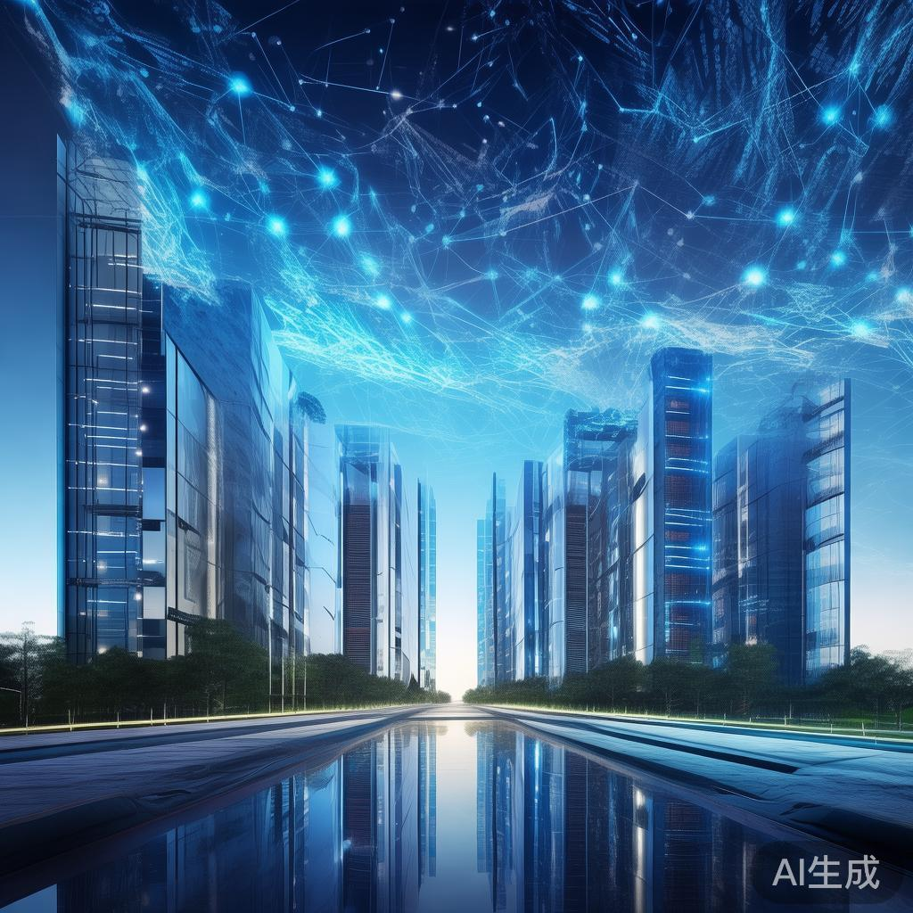

01
特朗普称将“很快”就伊朗问题做出决定 美军数千人待命
特朗普5日在白宫会见国家安全团队后表示，将很快就伊朗战争做出决定。纽约时报披露，美军数千名空军和海军人员已待命，对伊军事行动计划就绪；伊拉克同日发布飞行限制通告，中东局势再度紧张。
国际

特朗普5日在白宫会见国家安全团队后表示，将很快就伊朗战争做出决定。纽约时报披露，美军数千名空军和海军人员已待命，对伊军事行动计划就绪；伊拉克同日发布飞行限制通告，中东局势再度紧张。
特朗普5日在白宫对媒体表示，将就俄乌问题达成“重大协议”，他认为距离解决俄乌冲突已经很近。此前欧盟等多方刚在布鲁塞尔讨论乌克兰战后重建，停火谈判出现新的积极信号。
美国中期选举后政府动荡加剧：国防部长赫格塞思最早下周面临弹劾投票，他声称将坚决反击；彭博社报道称，国务卿鲁比奥正考虑离开现政府，人事震动或持续发酵。
11月5日，法国部分公共部门发起大罢工，引发全国范围抗议游行，巴黎、里昂、马赛、南特等多城出现示威活动。抗议总体和平但局部紧张，财政紧缩政策正面临持续考验。
世界银行5日发布最新国际债务报告，称最不发达国家正面临自1989年以来最高的外部债务成本，发展中国家外债规模持续攀升，低收入经济体的偿债压力与融资困境进一步加剧。
AI监管担忧引爆美股历史性抛售，纳指单日狂泻5.5%，特朗普称这是“因选举结果遭遇的最糟糕交易日之一”。全仓押注AI的对冲基金VARA十月暴跌33%；中概股相对坚挺，成为资金避险方向。
美股暴跌情绪传导至亚太：日经225开盘跌1.15%，期货早盘一度下挫7%，KOSPI开盘跌2.2%；10年期日债收益率降至2.665%创6月末以来新低。日本实际工资连续九个月上涨，为央行加息提供支撑。
英国央行宣布三年来首次加息，打响全球货币政策转向信号枪；欧洲央行管委齐格曼表示，12月加息的可能性“相当大”。主要央行在通胀反复背景下重新收紧，全球债市收益率曲线面临重新定价。

南下资金11月5日净卖出港股213亿港元，为4月8日以来最大单日净卖出规模。美股AI板块巨震背景下，避险情绪蔓延至港股市场，内地资金短线获利了结，后市关注资金回流节奏。
电子布价格近期再度走高，且本轮涨价的频次、幅度显著高于历史常规水平。多家产业链上市公司一致认为，电子布供不应求格局或延续，AI服务器与高端PCB需求拉动下，行业景气度持续上行。
英伟达提出AI内存全栈协同设计方案，Vera Rubin平台每GPU内存容量仅增约3%，推理吞吐量却提升最高30倍，以系统级优化破解内存瓶颈。美国众议院同时要求英伟达首席执行官出席AI简报会。
DeepSeek Harness披露最新运营数据：日活跃用户达154万，日耗Token高达92万亿，规模化商用节奏加快。国产大模型生态从“刷榜”转向真实负载运营，算力与工程化能力成为下一阶段竞争焦点。
OpenAI推出网络安全专用模型GPT-6 Cyber，将大模型能力延伸至威胁检测、漏洞挖掘与应急响应等安全场景。这是继开发者图像模型之后，OpenAI在垂直行业的又一次产品化落地。

华为云宣布将于11月中旬更新上线盘古模型开源版本，进一步开放国产大模型底座能力。国产AI基础设施正加速形成“开源模型+行业场景”的落地闭环，生态开放步伐明显加快。
大疆11月5日发布DJI Matrice 5T全场景轻型旗舰无人机，首次在轻型行业无人机上标配激光雷达与毫米波雷达，夜视与全天候感知能力大幅提升，电力巡检、应急救援等行业应用空间进一步打开。
据央视新闻，全国首笔进境物品税外卡直缴入库业务11月5日在广东深圳落地。深圳海关联合金融机构研发智能缴税新模式，境外银行卡可直接完成税款缴纳，跨境消费便利度进一步提升。
首批136项标志性重大应用场景项目清单日前发布，覆盖新领域新赛道、产业转型升级、社会治理服务等方向，煤矿智能化等场景加紧推进。以场景牵引技术创新，正成为稳增长与促转型的重要抓手。
全国医保影像AI识图大赛11月5日在广西南宁颁奖，这是全国首个深度融合医保业务、医学影像与人工智能的行业赛事。同期医保AI辅助诊断正加速在基层医疗机构落地，惠及更多县域患者。
工信部公开征求《机器人产品标识码管理暂行办法（征求意见稿）》意见，拟为机器人产品建立统一标识码管理体系，实现从生产、流通到使用的全链条可追溯，为产业规范发展和安全监管打好基础。
澎湃新闻调查报道：一些普通人的名字因误报进入“国家严重精神障碍信息系统”，备考青年、游戏从业者纷纷求助退出。误录纠错机制不畅，暴露出信息系统管理中个人权益保护的薄弱环节。
💬 评论区